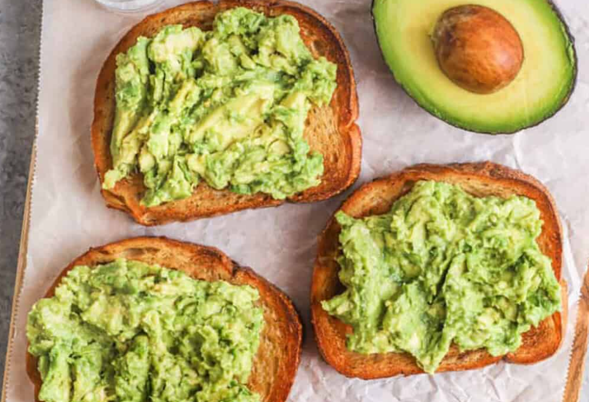

Home
Avocado Toast

Description
A simple and nutritious avocado toast that is quick to prepare and perfect for a light meal.
It is rich in healthy fats and keeps you full longer.
Ingredients
For this recipe, you'll need:
- 1 slice of whole grain bread
- 1/2 ripe avocado
- A pinch of salt
- A pinch of black pepper
- A drizzle of olive oil (optional)
- Lemon juice (optional)
Steps
- Toast the slice of bread.
- Cut the avocado in half and remove the pit.
- Scoop the avocado into a bowl.
- Mash it with a fork.
- Add salt, pepper, and a little lemon juice if desired.
- Spread the mixture on the toast.
- Drizzle olive oil on top if you want extra flavor.